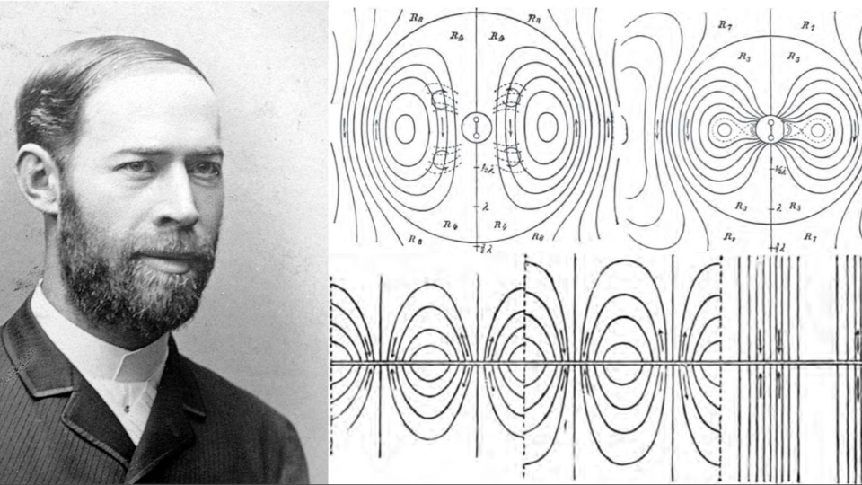
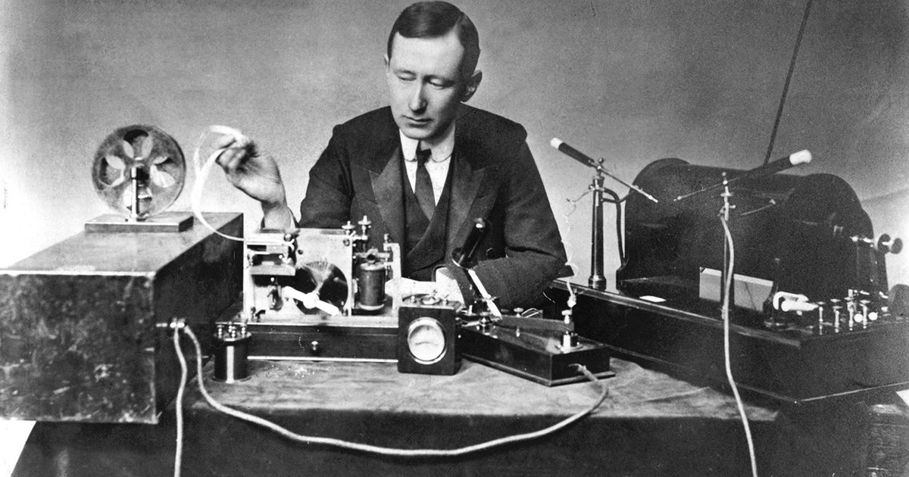
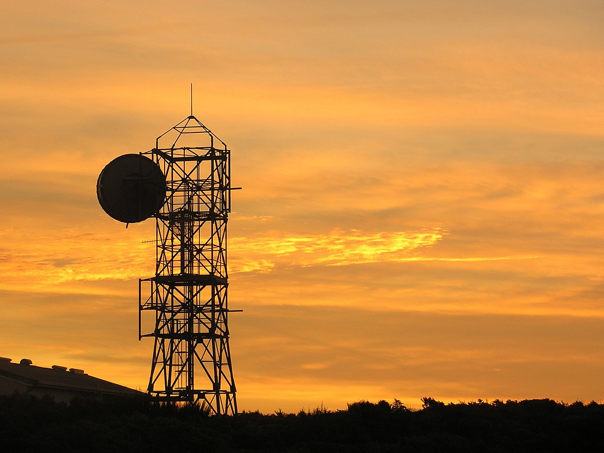
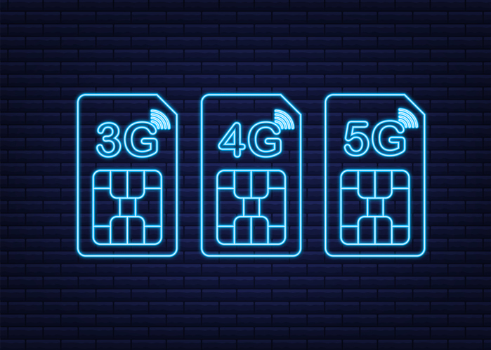
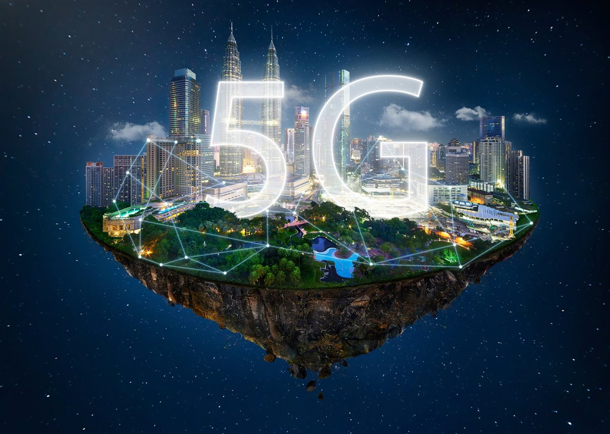

Heinrich Hertz demuestra la existencia de ondas electromagnéticas, sentando las bases de las tecnologías inalámbricas.
Guglielmo Marconi realiza la primera transmisión de radio sin cables, revolucionando las telecomunicaciones.
Las microondas comienzan a utilizarse para transmisiones de larga distancia, como en la televisión.
Aparecen las primeras redes móviles, marcando el inicio de una nueva era en las comunicaciones inalámbricas.
Las tecnologías 5G transforman la conectividad global, permitiendo velocidades y capacidades sin precedentes.
